Memiliki dinding sel dengan lapisan peptidoglikan tebal. Akan berwarna ungu jika diwarnai dengan pewarnaan gram.
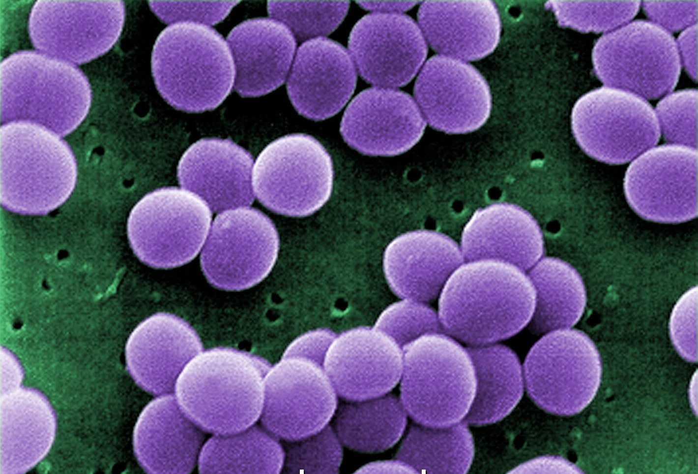
Dapat ditemukan di hidung dan kulit manusia. Umumnya, bakteri ini tidak berbahaya, namun ketika pertumbuhannya berlebih atau kekebalan tubuh sedang lemah, bakteri ini dapat menyebabkan penyakit seperti infeksi kulit.
Memiliki dinding sel dengan lapisan peptidoglikan tipis, namun memiliki lipopolisakarida. Akan berwarna merah jika diwarnai dengan pewarnaan gram.
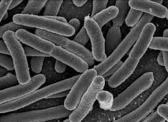
Umumnya hidup di usus manusia dan hewan tanpa menimbulkan masalah. Namun, beberapa jenis bakteri ini bersifat patogen. E.coli patogen dapat memicu masalah pencernaan seperti diare.
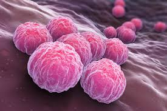
Penyebab penyakit klamidia yang merupakan yang merupakan salah satu penyakit menular seksual.
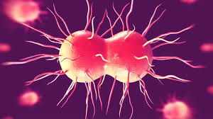
Penyebab penyakit gonore atau kencing nanah yang merupakan salah satu penyakit menular seksual.
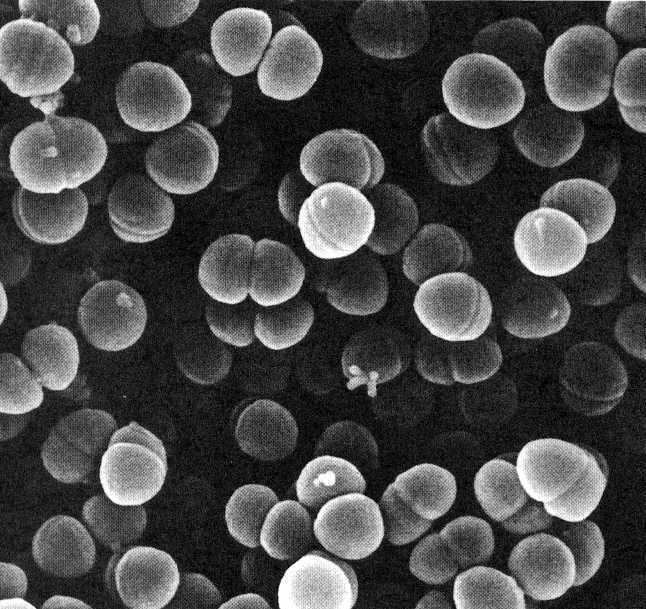
Berperan dalam proses pembuatan sosis.
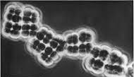
Mampu memproduksi hidrogen dan berperan penting dalam metabolisme serta siklus hidrogen di alam.
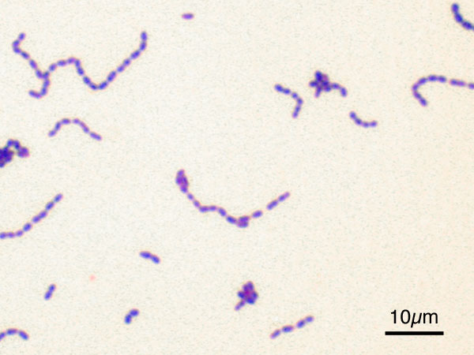
Penyebab penyakit pada gigi dan gusi, salah satunya karies gigi.
Dapat ditemukan di hidung dan kulit manusia. Umumnya, bakteri ini tidak berbahaya, namun ketika pertumbuhannya berlebih atau kekebalan tubuh sedang lemah, bakteri ini dapat menyebabkan penyakit seperti infeksi kulit.
Umumnya hidup di usus manusia dan hewan tanpa menimbulkan masalah. Namun, beberapa jenis bakteri ini bersifat patogen. E.coli patogen dapat memicu masalah pencernaan seperti diare.
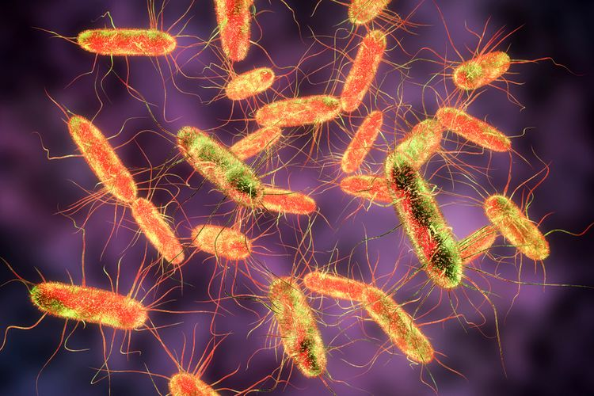
Menyebabkan demam tifoid atau tipes. Bakteri ini umumnya masuk ke tubuh melalui air atau makanan yang terkontaminasi.
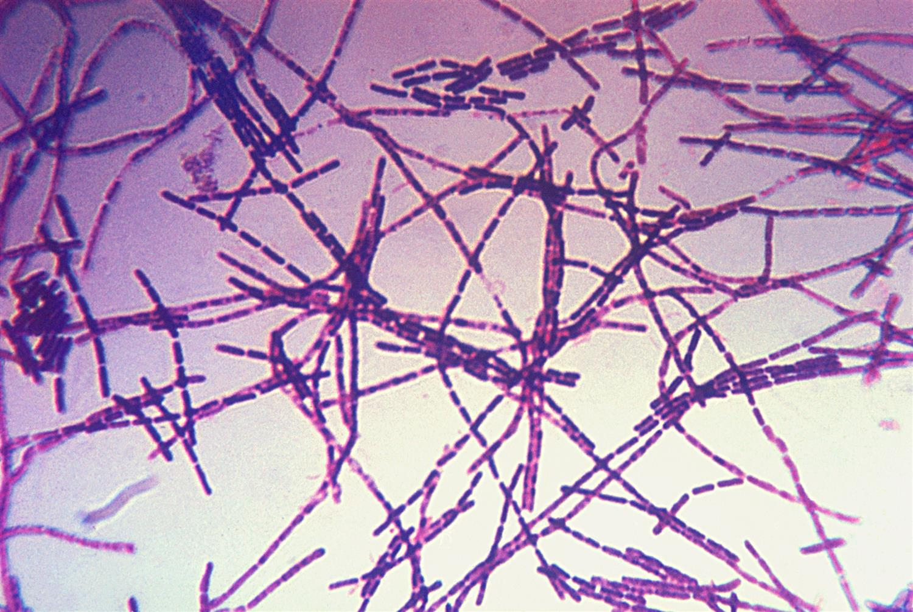
Menyebabkan penyakit antraks. Umumnya menyerang hewan ternak seperti sapi, kambing, dan domba. Namun, bakteri ini dapat menular dari hewan ke manusia.
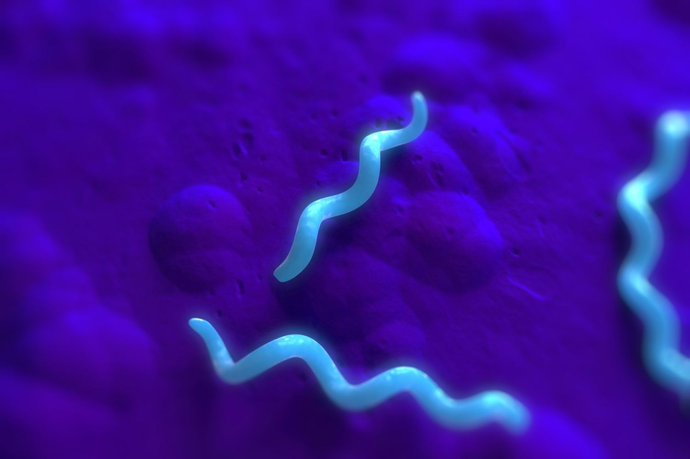
Merupakan bakteri belerang (sulfur) yang berfungsi menjalankan kemosintesis. Berperan penting dalam menjaga keseimbangan siklus sulfur di lingkungan perairan atau tanah.
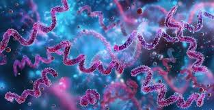
Menyebabkan penyakit sifilis atau raja singa yang merupakan salah satu penyakit menular seksual.
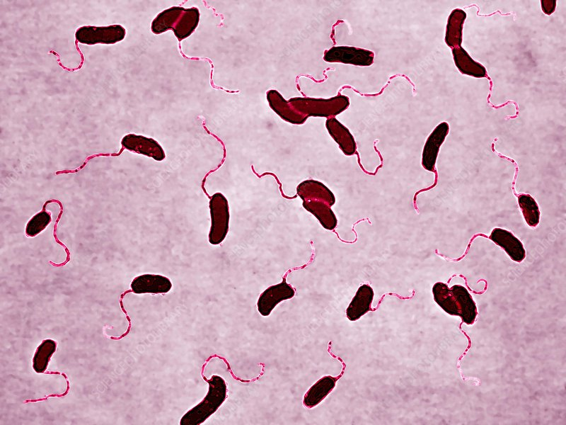
Menyebabkan penyakit kolera yang merupakan infeksi usus akut.
Bakteri yang membutuhkan oksigen.
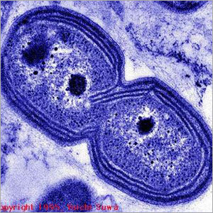
Salah satu bakteri siklus Nitrogen. Berperan dalam mengoksidasi amonia menjadi nitrit.
Bakteri yang hanya dapat hidup tanpa oksigen.
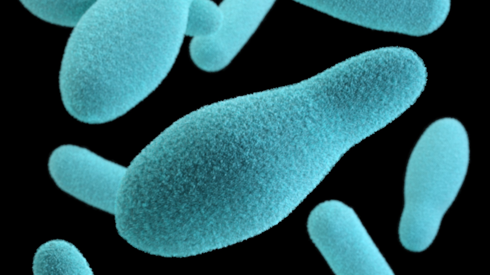
Seringkali ditemukan pada makanan kaleng yang tidak diproses dengan benar. Dapat menyerang sistem saraf dan menjadi penyebab penyakit botulisme.
Bakteri yang dapat hidup dengan oksigen ataupun tanpa oksigen.
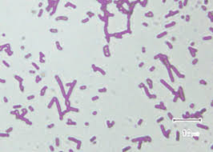
Berperan dalam pembuatan asinan dan terasi.
Bakteri yang tidak memiliki flagela.
Umumnya hidup di usus manusia dan hewan tanpa menimbulkan masalah. Namun, beberapa jenis bakteri ini bersifat patogen. E.coli patogen dapat memicu masalah pencernaan seperti diare.
Bakteri yang hanya memiliki satu flagela di salah satu ujung selnya.
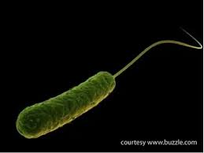
Dapat menyebabkan infeksi pada darah, paru-paru, saluran kemih, atau bagian tubuh lainnya setelah operasi.
Bakteri yang mempunyai flagela di kedua ujung selnya.
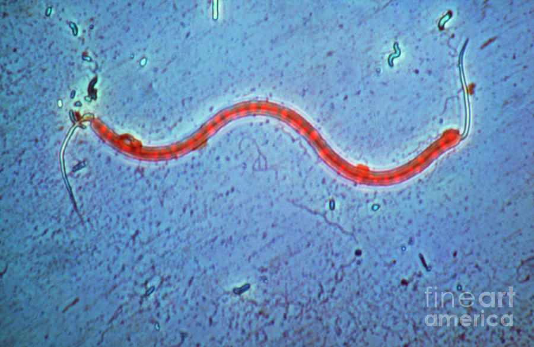
Bakteri ini umumnya hidup bebas di lingkungan perairan. Umumnya tidak bersifat patogen (tidak menyebabkan penyakit pada manusia)
Bakteri yang mempunyai sekumpulan flagela di salah satu ujung selnya.
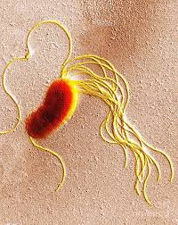
Hidup di sekitar perakaran tanaman. Berperan sebagai agen pengendali hayati dan pupuk hayati karena mampu memicu pertumbuhan tanaman serta melindunginya dari patogen.
Bakteri dengan flagela di seluruh permukaan selnya.
Menyebabkan demam tifoid atau tipes. Bakteri ini umumnya masuk ke tubuh melalui air atau makanan yang terkontaminasi.
Bakteri yang dapat memproduksi makanan sendiri dengan mengubah bahan anorganik menjadi organik.

Penjelasan Bakteri: Contoh bakteri monotrik yang menggunakan flagela tunggalnya di ujung untuk berenang cepat di lingkungan air atau tanah lembap.
Bakteri yang memperoleh energi dengan cara mengoksidasi senyawa kimia anorganik
Salah satu bakteri siklus Nitrogen. Berperan dalam mengoksidasi amonia menjadi nitrit.
Penjelasan Singkat: Kelompok bakteri yang memiliki rambut cambuk dalam jumlah banyak, baik berkumpul di satu ujung, di kedua ujung, maupun tersebar merata di seluruh permukaan tubuhnya.

Penjelasan Bakteri: Merupakan bakteri jenis **Lofotrik**, yaitu memiliki seberkas atau sekelompok flagela yang berkumpul hanya pada salah satu ujung selnya.

Penjelasan Bakteri: Merupakan bakteri jenis **Amfitrik**, yaitu memiliki flagela berumbai yang letaknya terpisah di kedua ujung kutub sel secara berlawanan.

Penjelasan Bakteri: Merupakan bakteri jenis **Peritrik**, memiliki flagela dalam jumlah sangat banyak yang tersebar merata di seluruh permukaan tubuh selnya.

Penjelasan Bakteri: Contoh bakteri peritrik lainnya yang hidup di tanah. Flagela di sekujur tubuhnya membantu mereka menjelajahi media nutrisi dengan efektif.